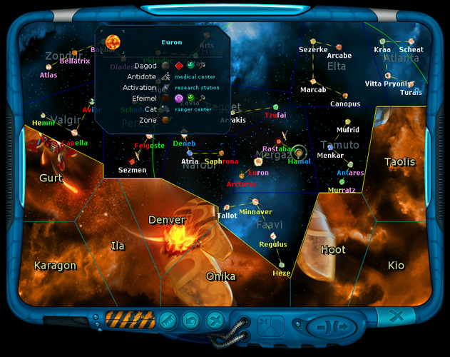

Ranger manual > Navigation
panel > Galaxy map (M)
|
Ranger manual > Navigation
panel > Galaxy map (M)
|
| Galaxy map (M) This is the map of the explored part of our galaxy. It is consists of several constellation sectors. In the beginning of the game the ranger receives a detailed map of only the nearest constellations. Star maps of other sectors can be obtained from the government buildings, but only on the planets of the systems, bordering to these unexplored sectors. Note. The wider is the galaxy map, the vaster and brighter will be the governmental quests. |

| Using the map you can find out the distance to any star in parsecs, and receive
a list of planets and space stations of any
star system, additionally the race
and relationship to the ranger. Note. You can change the font of the galaxy map in the game settings. In the open space the player can make a jump to another star system. To find out the distance from the current star to any other star: • Click the relevant star with the left mouse button. To receive a full list of planets and space stations in any star system: • Right-click the required star. |